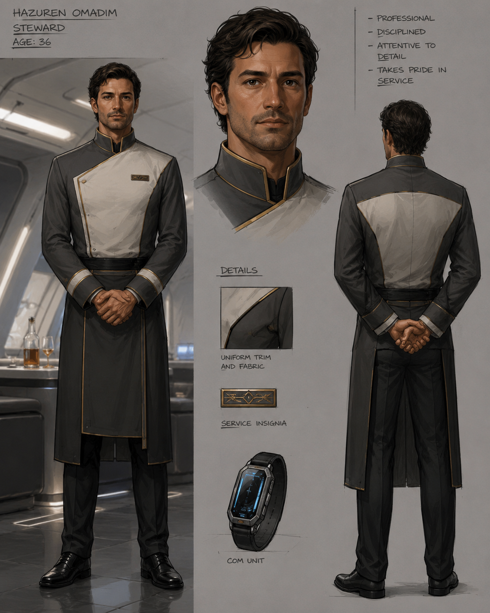

| Name | Hazuren Omadim |
|---|---|
| Age | 36 |
| Sex | Male |
| Species | Solomani/Vilani |
| Homeworld | Spirn, Cemplas Subsector, Core 1428 |
| Current Assignment | Steward aboard the Amelia's Grace |
| Traits | 1 Ship Share, Performer |
| STR | 5 / DM -1 |
|---|---|
| DEX | 6 / DM +0 |
| END | 9 / DM +1 |
| INT | B / DM +1 |
| EDU | C / DM +2 |
| SOC | 9 / DM +1 |
| SAN | 8 / DM +0 |
| MOR | B / DM +1 |
| Skill | Rating |
|---|---|
| Steward | 4 |
| Art: Performer / Storytelling | 3 |
| Carouse | 2 |
| Admin | 1 |
| Deception | 1 |
| Drive: Wheel | 1 |
| Electronics: Computer | 1 |
| Persuade | 1 |
| Profession: Purser | 1 |
| Science: Economics | 1 |
| Streetwise | 1 |
| Vacc Suit | 1 |
| Flyer: Grav | 0 |
| Credits | 20,000 |
|---|---|
| Ship Shares | 1 |
| Career | Notes |
|---|---|
| Performer | Three recorded career terms. Specialist in storytelling, public presentation, etiquette, and social performance. |
Hazuren Omadim began his adult life as a performer, specializing in storytelling and polished social presentation. His work eventually brought him into contact with noble circles and high-status patrons.
At age 22, Hazuren gained a noble patron on Aursis. This connection opened doors into elite society and taught him how to move among aristocrats without being mistaken for one of them.
At age 26, he befriended a bounty hunter in the Dingir Subsector who sometimes acted as his bodyguard. At age 30, Hazuren encountered a psionic institute and was tested, but was determined not to be psionic.
| Name | Connection |
|---|---|
| Unnamed Noble on Aursis | Ally / Patron |
| Unnamed Bounty Hunter in Dingir Subsector | Ally / Former Bodyguard |
Hazuren is more than a servant. He is a trained social operator, performer, purser, and observer of noble behavior. Aboard the Amelia's Grace, he keeps the vessel civilized, presentable, and socially functional.
During investigations, Hazuren is especially useful at formal dinners, noble receptions, private salons, and diplomatic visits. He can hear things others miss because most nobles underestimate the staff.